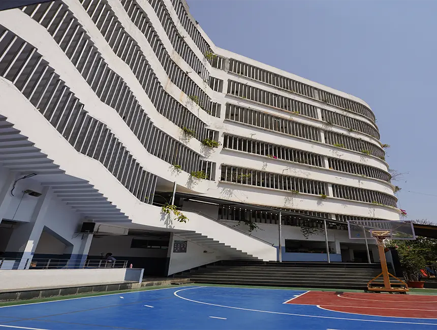

Welcome, curious explorer, to my very first corner of the internet!
My name is Shrinika, but please feel absolutely comfortable calling me Shri –it's the name I prefer and the one that truly feels like me. At the youthful age of fourteen, with the exciting milestone of fifteen just around the corner, I'm thrilled to embark on this digital adventure and share a glimpse into my world with you. This webpage marks the beginning of my journey into the fascinating realm of web creation, and I extend a warm invitation for you to freely navigate and discover some of the amazing aspects that make me, well, me! As you scroll through these digital pages, you'll uncover a collection of thoughts, interests, and perhaps even a few surprises that I'm eager to share. Consider this space a digital handshake, a friendly introduction to the person behind the screen. So, take your time, explore, and I sincerely hope you enjoy getting to know a little bit more about Shri!
Name:
Shri
Age:
14 (Fourteen)
DOB:
5th June, 2010
POB:
Salem, Tamilnadu, India
Parents:
Father: Shanmuga, Mother: Aarthi
Yes, as you read, my name is Shri, and I'm almost fifteen! I was born on June 5th in Salem, Tamilnadu, India. My family has a mixed Tamil and Gujarati background, and I'm fluent in Tamil, Sourashtra, and English. Surprisingly, I also know other Indian languages like Kannada, Telugu, Malayalam, and Hindi – I know the most languages in my family! You can find some of this info in the table above. It's a bit different, I know, but I hope you liked it. Scroll below to learn about my school, family, and pet
My Family
My School
My Pets
MY FAMILY ❤︎
My family holds a very special place in my heart, and it's my sincere hope that everyone cherishes and cares for their own families as well. They truly provide a deep and meaningful reason for navigating the challenges of this world, offering unwavering support and a helping hand to lift us up whenever we stumble. While my family isn't large or particularly grand, at its core, it's made up of the most important people in my life: my mother, whom I affectionately call Amma, my father, whom I call Appa, and my wonderful little brother.
My mother, Aarthi, was born in Salem, a vibrant city in Tamilnadu, India, on the fifth of May, 1985. Growing up, her life was shared with her sister, my beloved aunt whom I affectionately call Mousi, and of course, their parents, my grandparents. My grandfather, I call Dhadhu, and my grandmother, I call Amama. Interestingly, our family has quite a mixed heritage, the exact origins of which are a bit of a mystery, but my mother comes from a blend of Gujarati and Tamil backgrounds. My Amama's side of the family is rooted in the Sourashtra community, while my Dhadhu's side is predominantly Tamil. This rich cultural mix has resulted in my mother being fluent in a wonderful array of languages, including Tamil, Sourashtra, Hindi, and English. Professionally, my mother is an independent and driven working woman in the IT sector. She is employed by a company called GFX and frequently travels to Windsor for work, trips that we sometimes have the pleasure of accompanying her on. It's clear she has an affinity for computers and coding, although I often joke about seeing her constantly at her desk, glued to her 'dusty' laptop, engaged in what seems like an endless stream of meetings – quite exhausting to witness, I must say!
My Dhadhu, comes from a background deeply connected to the fertile Tamil agricultural lands. He later pursued academia and served as a Geography professor in his time, and even in retirement, he possesses a wealth of wisdom and knowledge that one can readily glean from his experiences. As in for my Amama, she hails from a more large, traditionally oriented family. Her own mother was a strict yet disciplined principal and mathematics teacher, which perhaps explains my Amama's inherent calmness and organized nature. Amama herself excelled academically, graduating as a gold medalist in Chemistry before dedicating herself to her household and lovingly caring for my mother and my Mousi.
My Mousi, is someone I am particularly fond of. She currently resides and works abroad in the beautiful country of Ireland, but she makes it a point to visit India every so often, much to my delight! In fact, most of my summer vacations are filled with fun and laughter spent with her, my uncle, whom I call Chithappa, and my wonderful cousin brother, who always bring such joy and thoughtful gifts for me.
Now, turning to my father, Shanmuga, his roots lie in the verdant landscapes of Tirunelveli, a region in Tamilnadu. He was born on the first of August to my other set of grandparents. Sadly, they both are no longer with us, but their memory is kept alive in our hearts and through the occasional rituals we perform to honor their spirits. My father also grew up with an elder brother, whom I call Perriyapa. While my knowledge of my dad's extended family isn't as detailed as my mother's, I know that his side is also quite large. He was raised in a close-knit, almost village-like community, surrounded by many uncles and aunts whom I am very fond of! He had the experience of studying in a simple government school where the focus was entirely on Tamil, making him a fluent speaker of our heritage language. Whenever I visit his hometown, it feels like stepping into one of those heartwarming cinematic movies, filled with humble and genuine people with whom you can easily share laughter and conversations about anything and everything.
My father, much like my mother, also works for a well-known company, TELUS, where he holds a managerial position. But beyond his role as a father, he's truly like a buddy to me. He has such a lighthearted and playful nature, and he seems to effortlessly retain a youthful spirit. It's easy to see why my mom was so drawn to him from the start. Yes, theirs was a love marriage, a beautiful union into which I later arrived, perhaps adding my own brand of delightful chaos to their lives. Then my brother, Om, arrived seven years ago and definitely added some fun chaos! I have lots of nicknames for him, like Omy, Vennai (which means butter in Tamil), and sometimes Kutty Sathan (little devil)! He's really naughty and loves to play, but he's also very curious about things.
MY SCHOOL ❤︎
My school life, while contained within four walls, has been a vibrant and memorable journey thus far. As far back as I can recall, my early education began in Canada until the age of six. Then, my academic path took me to India, where I continued my studies from Grade 2 to Grade 3 at Presidency School in Bangalore, a private school following the CBSE curriculum.

Following Grade 3, we moved for a brief period to Salem, my birthplace in Tamilnadu, and I attended Grade 4 at Emerald Valley Public School, a picturesque school nestled near a hill station. I truly enjoyed my time there, forging some lasting friendships, though perhaps encountering a few adversaries along the way is an inevitable part of growing up. Academically, I excelled, particularly in Mathematics, and maintained good grades across all my subjects.
However, after Grade 4, circumstances led us back to Bangalore, which coincided with the onset of the COVID-19 pandemic. This meant a period of learning from home, attending online classes with the Presidency Institute. I successfully completed my education up to Grade 7 in Bangalore. Then came another significant move, this time back to Canada, where I embarked on a new chapter in Toronto, pursuing my middle school education at Donview.
The transition to Donview in Canada brought about a noticeable shift in my educational experience. The learning environment felt distinct from the more rigorous academic culture I was accustomed to in India. Middle school in Toronto seemed to offer a slower pace and granted me more leisure time; it often felt like a playground. While Grade 7 wasn't particularly memorable, Grade 8 gifted me with truly unforgettable experiences. It was in Grade 8 that I had the good fortune of meeting my class teacher, a remarkably wonderful, kind, and lighthearted educator. During that year, I also formed a close friendship with Jathu, a bond that has remained strong to this day. Jathu undeniably made my life more fantastic! We grew incredibly close, our friendship deepening through shared experiences. Interestingly, our connection was perhaps even stronger due to our shared Tamil heritage, with her roots tracing back to Sri Lanka and mine to India. We seemed to have a natural understanding. We both deeply appreciated our teacher, who felt more like a supportive friend than just an instructor. However, the joy and camaraderie of middle school eventually came to an end as we both transitioned to Victoria Park Collegiate Institute for Grade 9.
Even though my time in high school is still ongoing, I've already formed a fantastic group of friends, and thankfully, my friendship with Jathu has continued to thrive. I've also become close with other wonderful people. Interestingly, I've also found a special connection with my geography teacher from last semester; there was a certain resemblance to my favorite middle school teacher, and our student-teacher relationship has blossomed into something of a little friendship too!
MY PETS❤︎
When it comes to pets, I have a particular fondness for dogs! I can't quite pinpoint the exact reason, but I'm simply drawn to their cute, fluffy textures, those adorably expressive faces, and their sweet little barks. Although my parents never got me a puppy of my own, my fascination and love for dogs and puppies remained strong. In fact, some of my favorite breeds are Beagles, Shih Tzus, and Golden Retrievers. Owning a dog has always been a dream of mine, something I've hoped to experience at least once in my life, but it hasn't happened yet. Instead, when I was living in India, I was gifted with birds – cute, fluffy budgies that I diligently took care of. I remember having eight of them in total, all paired up.
Click the picture above for "Learn about Budgerigar"
However, maintaining them turned out to be quite a significant task. It was tiring, especially while juggling school. Their cages needed constant cleaning, their water and seed dishes had to be regularly refilled, and the sheer amount of dust they stirred up in the house was unbelievable. Sadly, despite our best efforts to keep them hydrated, the intense heat in India eventually led to their passing. It was heartbreaking to witness my dear budgies die, and ultimately, we decided to give the remaining birds away. I remember crying a lot in private, knowing I would never see them again and perhaps never have pets again.
For a while, my parents were quite firm about not getting any more pets, that is until I managed to convince them to get me bunnies!
Click the picture above for "Learn about Rabbits"
And to my delight, my dad agreed, so we brought home a pair: Brownie and Oreo. The names seemed to perfectly suit them. Brownie was a wonderfully furry brown bunny, while Oreo was a striking black and white with the most beautiful blue eyes. Both were incredibly pretty and cute, and I loved showering them with kisses. Unfortunately, after only a few months, Oreo sadly passed away while we were in my native place. I was deeply saddened by his loss, and not wanting to see Brownie suffer the same fate one day, we made the difficult decision to give him to a pet store. Since then, I've been hesitant to get any more pets, feeling a sense of guilt over what happened. However, the dream of having a dog, a loyal life companion to accompany me on all my adventures, still lingers. My brother shares this same desire, but for now, our parents have a firm 'NO' etched on their faces. Well, here's hoping for some good luck in the future!